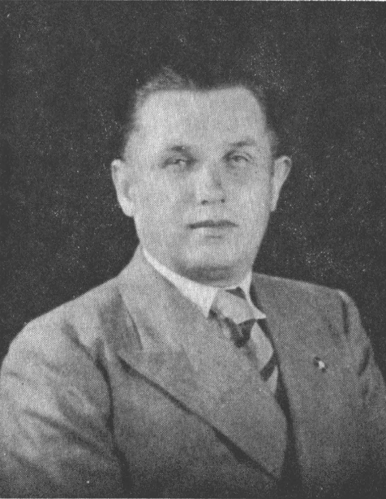
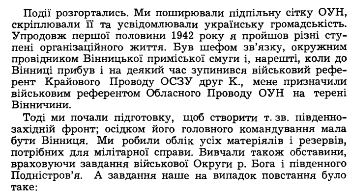
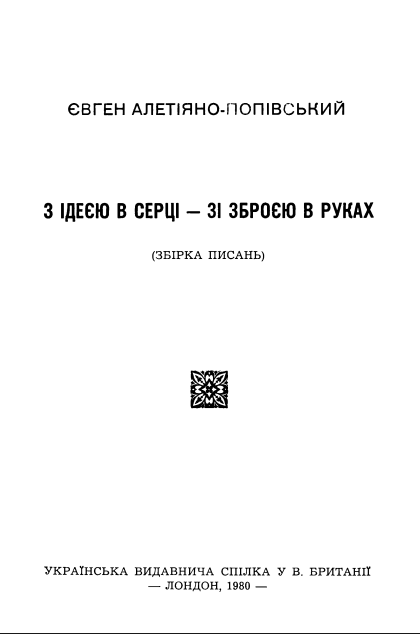

Історична карта 1945 року
Перейти до карти
В критичні періоди історії українського народу та генези української державності вагому роль відіграють сильні особистості. І мова не про одну людину, яка поведе за собою натовп, ні, мова йде про безліч видатних українських діячів, які були незламні духом та вірили в українську державність у найбільш складні часи.

Одним з них є військовий референт обласного проводу ОУН на теренах Вінниччини Євген Алетіяно-Попівський (роки життя 1905-1976). Він родом із Копитинців, Вінницької області. Походить зі шляхетського роду Ляско-Алетіяно-Попівських. Своє дитинство Євген Алетіяно-Попівський провів ще в кордонах Російської імперії, а подальші роки припали на буремні часи визвольних змагань українського народу на фоні двох світових воєн. З раннього віку Євген Алетіяно-Попівський зростав у національно-свідомому оточенні своєї родини. Вже у віці 10 років отримав у подарунок від дядька збірку поезій Тараса Шевченка для дітей «Малий Кобзарик», звідки прочитав історико-героїчну поему «Гайдамаки» про козацько-селянське повстання проти польської шляхти на Правобережній Україні 1768 р. Після прочитання книжок «Зруйнування Батурина» та «Зруйноване гніздо» Кащенка вже в юнацькому віці Євген Алетіяно-Попівський зазначив, що зрозумів глибоку трагедію України й пройнявся ненавистю до московитів. У 18 років він постановив присвятити своє життя рідному народові, помсті за смерть батуринців, борців за волю України.
Період більшовицької влади на українських теренах Євген Алетіяно-Попівський у своїх споминах характеризує як окупаційний, нав’язаний силою після військової поразки українців. До початку Другої світової війни він викладав українську мову та літературу в 8-10 класах, потім світову літературу, загальну історію та історію України. Такий вибір професії спричинений відмовою совєтської влади 1927 року в розвитку військової кар’єри Алетіяно-Попівського як «неблагонадійного», що походить з «небезпечної» родини. Проте у 1941 році його мобілізували до лав Червоної армії, звідки він потрапив у полон до німецьких військ.
Життя та діяльність діяча у м. Вінниця
У 1942 році доля Євгена Алетіяно-Попівського привела його до Вінниці, де він познайомився з членами визвольного підпілля революційної ОУН. Члени організації українських націоналістів прибули до Вінниці у липні 1941 року. Група спершу нараховувала 10 чоловік, які одразу ж взялися за організацію місцевої влади і організаційної сітки. Алетіяно-Попівський став активним учасником революційно-визвольної боротьби як окружний керівник, військовий референт обласного проводу ОУН на теренах Вінниччини.
Під час німецької окупації Вінниці, 31 серпня 1941 року вийшов перший номер підконтрольної ОУН газети «Вінницькі Вісті», де пропагували розвиток українства в усіх галузях: виходили анонси театральних п’єс та вистав, публікувалися статті українською на різноманітну тематику, також була дошка оголошень для розвитку підприємництва, зібрань студентства. Зокрема, Євген Алетіяно-Попівський запропонував редакції газети «Вінницькі вісті» свої статті «Рідна мова в церкві», «Національне виховання в школі» та «Мій спогад про голодний 1933 рік на Поділлі», перші дві з яких було опубліковано. Євген Алетіяно-Попівський жив військовою справою і саме військова потуга, на його думку, є ключем до волі українського народу. Водночас примітною є його публіцистична діяльність та загалом розвиток української культури. Він долучився до створення у Вінниці часопису «За Самостійну Україну», де публікувався матеріял про різні сфери життя поневоленої України та її боротьби за визволення.
Восени 1942 року провід ОУН на Вінниччині прийняв рішення йти в глибок підпілля. Проте вони зберігали певні ключові позиції в адміністративному та господарському апараті, зокрема це місцевий Відділ освіти, редакція «Вінницьких Вістей», Вінницька насіннево-дослідна станція, Жіноча Служба України, Служба місцевого порядку, «Заготзерно» та ін. Напередодні Великодня 1943 року німці провели масові арешти свідомих активних діячів українства у Вінниці. На цьому досить несприятливому фоні для українського підпілля місцевий провід ОУН на чолі з Євгеном Алетіяно-Попівським приймають рішення перенести організаційний центр із Вінниці на села та частково в ліс. Це було здійснено й з метою подальшої співпраці з українською повстанською армією, а саме розбудовою відділів УПА в околицях Немирова. Німецька окупаційна адміністрація підходила все ближче до визвольного проводу українців. Кримінальна поліція переслідувала учасників та керівників ОУН, зокрема Євгена Алетіяно-Попівського. Він був змушений покинути Вінниччину на початку січня 1944 року, передавши провід області командирові Батькові-Грабцеві.

Період еміграції
Подальша доля видатного воїна України склалась за межами рідної землі. Три роки Алетіяно-Попівський Євген провів у полоні в м. Ріміні, Італія, а в подальшому оселився у Великій Британії. Там він проводив активне громадське життя на користь українського народу. Долучився до видання журналів «Визвольний шлях», «Сурмач», «Відомості», часопис «Українська думка». Досліджував українську старовину та історію. В еміграції Алетіяно-Попівський Євген знайшов віддушину в бібліотеці Британського Музею, а саме ґрунтовному вивченню її відділу україністики. Адже на території більшовицької України створення та збереження таких видань не заохочувалось, бо розвиток української мови й культури суперечив політиці більшовицької держави. Саме в цій бібліотеці Лондона, далеко за межами рідної землі, Алетіяно-Попівський Євген писав свої статті, спомини та робив доповіді.

Євген Алетіяно-Попівський залишив у спадок майбутнім поколінням свої думки, досвід та знання у численних публіцистичних та наукових працях. Він заповів видати свої спомини окремою збіркою й навіть виділив на це заощадження. Назва збірки чудово характеризує її автора – «З ідеєю в серці – зі зброєю в руках» – саме таким був життєвий шлях видатного українця, військового та культурного діяча, Євгена Алетіяно-Попівського.
автор Франкова Вікторія
Цікаві місця

Всі права захищені.